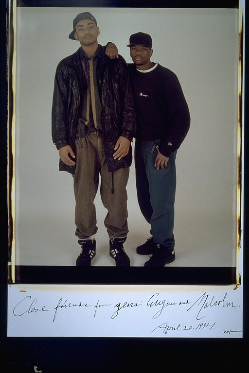

Pals: Boys Who Grew Up Together
elsadorfman.com/pals
Eugene: Me & Malcolm: I was so fortunate to be Malcolm Lucas' best man when he became my first friend to get married on August 12, 2000 to Bre (Peterson) Lucas. He is a model for what it is to be a mature young man. He has always been a big brother to me, and I have an infinite amount of respect for his sincerity and integrity. He, Bernard, and I founded the GTP in the late 80s and although we have grown into men since, I will always owe them a debt of gratitude for helping me to develop into a man.
Aldo: Malcolm is one of Eugene's best friends. He has known him his whole life, and I know that Eugene always looked up to him. He lived in Boston, so I did not meet him till later. But Eugene would always talk about him, so I knew he was a good friend for Eugene. And later he became good friends with me and Isaac also. And today, he is a happily married man, wow, time flies.

elsad@comcast.net